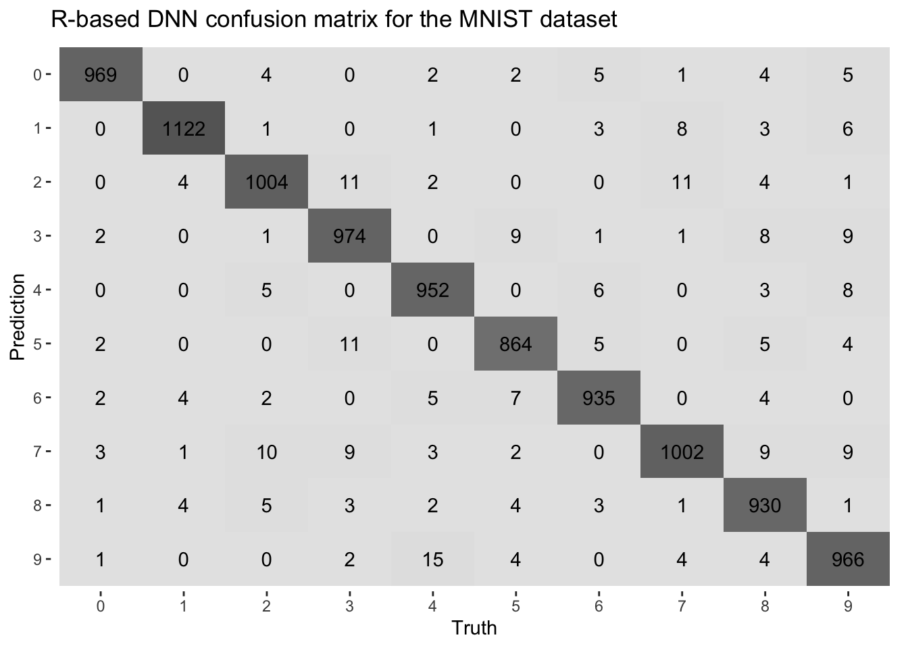
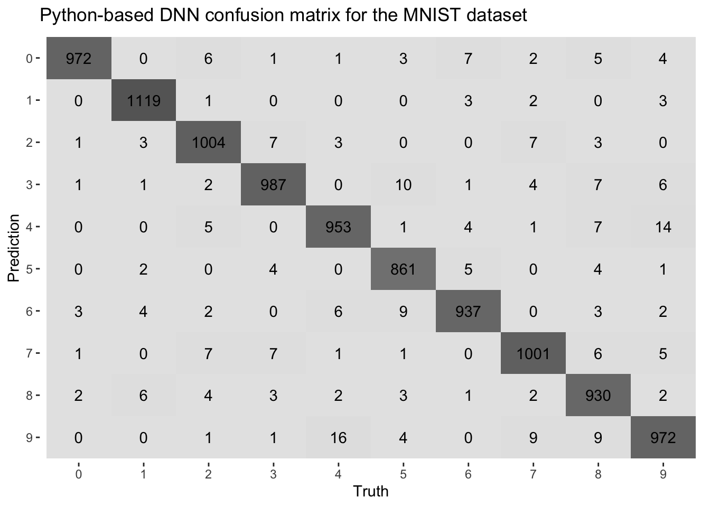

from google.colab import drive
drive.mount('/content/drive')Supercharge Deep Learning in R with a hybrid R–Colab workflow
machine learning
Training deep learning models in R is powerful—but it can be painfully slow on a single-CPU machine. This post shows how to blend the flexibility of R for data prep, visualization, and evaluation with the raw GPU power of Google Colab for fast model training. I show how to create a seamless workflow allowing continued use of familiar R tools, while letting Python handle the heavy lifting when it counts.
Exploring deep learning in R with the Keras and tensorflow packages reveals an intuitive and powerful interface. With just a few lines of R code, deep neural networks can be built, trained, and evaluated for tasks such as image recognition, time series forecasting, or natural language processing—all while maintaining the efficiency and flexibility of a tidyverse-powered workflow.
But here’s the catch: training deep learning models on a typical laptop or single-CPU machine can be painfully slow. GPUs are built to handle the massive parallelism required for deep learning, but most R users don’t have one sitting idle in their local setup.
Enter Google Colab—a free, cloud-based environment that provides access to powerful NVIDIA GPUs, without the need for installation or cost. It offers the experience of renting a high-performance machine for deep learning, directly from a browser. For many R users, this opens up a new realm of possibilities, enabling models that would take hours to train on a local machine to run in mere minutes.
But there’s one little twist: Colab speaks Python. The environment is built for the Python ecosystem, especially tools like TensorFlow, PyTorch, and Keras—all in their native Python form.
This doesn’t mean R users are excluded. Instead, it offers an opportunity to combine the strengths of both environments. All data preparation, exploration, and evaluation can be done in R using tools like dplyr, ggplot2, and yardstick, while the deep learning model training can be delegated to Colab. Colab serves as an outsourced training assistant—working seamlessly in Python.
This hybrid approach requires some initial setup, but once established, it becomes smooth, scalable, and remarkably efficient. R can be used for data wrangling, visualization, and model evaluation—leveraging the power of the tidyverse. When it’s time to train the model, the heavy lifting can be offloaded to Colab, with its GPU handling the computations. The two environments—R and Python—communicate through shared files, ensuring a flexible, fast, and efficient workflow.
Google Colab
Google Colab (short for Colaboratory) is a free, cloud-based platform designed for executing Python code with minimal setup. It provides access to high-performance hardware accelerators, including GPUs and TPUs, making it especially valuable for deep learning tasks that would otherwise be time-consuming on a standard CPU.
Although Colab is Python-native, it can be seamlessly integrated into an R-based workflow. Data preprocessing, visualization, and evaluation can remain in R, while model training is delegated to Colab, leveraging its GPU capabilities. This hybrid approach combines the strengths of both environments—tidyverse-friendly development and accelerated training performance.
Connecting Google Colab to Google Drive
Google Colab offers a powerful, cloud-based environment with access to free GPU acceleration. However, Colab notebooks run in a temporary virtual machine, meaning any files saved during a session are lost when the session ends.
To support reproducibility and a hybrid R–Python workflow, it’s essential to connect Colab to Google Drive. This enables persistent storage, shared access to data and model outputs, and smooth integration between Colab and local R projects.
In order to connect the following code is added at the top of the Colab notebook:
The user is then prompted to authorize access to her/his Google account. Once mounted, the Drive will be available at:
/content/drive/MyDrive/The user can now read from and write to any project folder shared via Google Drive.
Full MNIST Classification Pipeline in R
The MNIST (Modified National Institute of Standards and Technology) dataset is a widely used benchmark for testing machine learning algorithms, particularly in the field of deep learning. It consists of 70,000 handwritten digit images, each labeled with the corresponding digit (0-9). The images are 28x28 pixels in grayscale, making them a relatively simple task for modern machine learning models, though still an effective tool for evaluating model performance.
The following R code snippet presents the entire pipeline for the MNIST classification task using Keras for deep learning. This pipeline includes:
- Data Preparation: Loading and preprocessing the MNIST dataset, including normalization and reshaping of image data to fit the model.
- Model Definition: Constructing a deep neural network (DNN) using Keras, with layers for dense processing, dropout regularization, and softmax output.
- Model Training: Compiling and fitting the model to the training data, while using a validation split for model evaluation.
- Performance Evaluation: Timing the training process and calculating the overall duration.
- Exporting Data: Saving both the training and test datasets, as well as predictions, for further analysis or use in external systems.
The implementation also ensures reproducibility by setting a fixed random seed across the entire workflow, and leverages the tidyverse for data manipulation and visualization, alongside the Keras library for deep learning.
This pipeline provides a streamlined approach to model development, training, and evaluation while integrating seamlessly with Python-based environments (such as Google Colab) for GPU-accelerated training.
Minimal setup
This section outlines the essential libraries for the project and specifies the base directory path at which Google Drive is mounted, enabling file access within both R and Colab-based Python environments.
Code
library(tensorflow)
library(keras)
library(reticulate)
library(tidyverse)
library(yardstick)
library(readr)
# Define Google Drive base path
gdrive_base <- "~/Library/CloudStorage/GoogleDrive-<your-mail>@gmail.com/My Drive/<your-project-folder>"Load and preprocess the MNIST dataset
The dataset is reshaped to match the input requirements of a fully connected (dense) neural network architecture. Additionally, class labels are one-hot encoded to facilitate categorical classification during model training.
Code
mnist <- dataset_mnist()
x_train <- mnist$train$x / 255
x_test <- mnist$test$x / 255
y_train <- mnist$train$y
y_test <- mnist$test$y
# Reshape for dense model (flatten 28x28 images)
x_train <- array_reshape(x_train, c(nrow(x_train), 784))
x_test <- array_reshape(x_test, c(nrow(x_test), 784))
# One-hot encode labels
y_train_cat <- to_categorical(y_train, 10)
y_test_cat <- to_categorical(y_test, 10)Define model
The model is defined using the Keras API as a sequential architecture composed of fully connected layers. Following its construction, the model is compiled by specifying the loss function, optimization algorithm, and evaluation metrics, thereby preparing it for training.
Dropout is used to help the model generalize better and avoid overfitting. During training, it randomly turns off a portion of the neurons in the network. This forces the model to learn more robust features instead of relying too heavily on any one part of the network.
tf$keras$optimizers$legacy$Adam() is used to maintain the original behavior of the Adam optimizer, which can be especially valuable on M1/M2 MacBook architectures where newer versions might encounter compatibility issues. Newer versions changed how optimizers work, so the legacy version ensures compatibility with older code and stable training results.
Code
model <- keras_model_sequential(list(
layer_dense(units = 128, activation = "relu", input_shape = 784),
layer_dropout(rate = 0.4),
layer_dense(units = 64, activation = "relu"),
layer_dropout(rate = 0.3),
layer_dense(units = 10, activation = "softmax")
))
model %>% compile(
loss = "categorical_crossentropy",
optimizer = "adam", #tf$keras$optimizers$legacy$Adam(),
metrics = "accuracy"
)Training and time the training
Setting a seed ensures reproducibility of training results, while timing the training process helps assess the efficiency of the model’s learning and optimization.
The validation split refers to the portion of the training data set aside during training to evaluate model performance on unseen data, helping to detect overfitting (and tune hyperparameters, though not considered in this post).
The number of epochs is set to 10. For the purposes of this post, I will not address whether the training process adequately accounts for the issue of overfitting and generalization.
Code
# Set seed for reproducibility across R, TensorFlow, NumPy
set.seed(123)
tensorflow::set_random_seed(123)
# Time the training
start_time <- Sys.time()
model %>% fit(
x_train, y_train_cat,
epochs = 10,
batch_size = 256,
validation_split = 0.2,
verbose = FALSE
)
end_time <- Sys.time()
duration <- c()
x <- end_time-start_time
duration[1] <- as.numeric(regmatches(x,regexpr("\\d*\\.?\\d+",x)))Export training and testing sets to Drive
The training and testing sets saved to Drive will be used later in a Colab notebook for GPU-based training of the same model defined in Keras above.
Code
# Convert data to data frames with labels
colnames(x_train) <- paste0("pixel_", seq_len(ncol(x_train)))
colnames(x_test) <- paste0("pixel_", seq_len(ncol(x_test)))
train_df <- as_tibble(cbind(label = y_train, x_train))
test_df <- as_tibble(cbind(label = y_test, x_test))
write_csv(train_df, file.path(gdrive_base, "data", "mnist_train.csv"))
write_csv(test_df, file.path(gdrive_base, "data", "mnist_test.csv"))Predict in R and export
After making predictions in R, we can export the results and visualize the confusion matrix to evaluate the model’s performance. We also compute and export the accuracy, along with the training time, to track the model’s efficiency.
Code
# Only needed if you want to compare R vs Colab predictions.
preds_r <- model %>% predict(x_test, verbose = FALSE) %>% k_argmax()
preds_df <- tibble(
actual = y_test,
predicted = as.array(preds_r)
)
# Convert to factors
preds_df <- preds_df %>%
mutate(
actual = factor(actual),
predicted = factor(predicted, levels = levels(actual))
)
acc <- c()
acc[1] <- accuracy(preds_df, truth = actual, estimate = predicted)$.estimate
conf_mat(preds_df, truth = actual, estimate = predicted) %>%
autoplot(type = "heatmap") +
ggtitle("R-based DNN confusion matrix for the MNIST dataset")
Code
write_csv(preds_df, file.path(gdrive_base, "data", "predictions_r.csv"))(Later) Compare with Colab predictions
The predictions made in R can be compared with those generated in Colab to assess the consistency and performance of the model across different environments.
- Open the notebook in Google Colab.
- At the top menu bar, click “Runtime”
- Select “Change runtime type”
- In the “Hardware accelerator” dropdown menu, choose:
- GPU to enable GPU support
- TPU if you want to experiment with TPU acceleration (more advanced)
- None to use CPU only
- Click “Save”
- Colab will restart the kernel and launch an environment with the selected hardware.
Code
# After Colab finishes and saves 'predictions_colab.csv':
preds_colab <- read_csv(file.path(gdrive_base, "data", "predictions_colab.csv"))
# Convert to factors
preds_colab <- preds_colab %>%
mutate(
actual = factor(actual),
predicted = factor(predicted, levels = levels(actual))
)
acc[4] <- accuracy(preds_colab, truth = actual, estimate = predicted)$.estimate
conf_mat(preds_colab, truth = actual, estimate = predicted) %>%
autoplot(type = "heatmap") +
ggtitle("Python-based DNN confusion matrix for the MNIST dataset")
Code
# Optionally print Colab training time (if saved)
duration[4] <- read_lines(file.path(gdrive_base, "data", "colab_duration.txt"))Comparative analysis
After running the model for 10 epochs—with all other elements of the pipeline held constant—I repeated the classification task using the DNN trained for 50 and 100 epochs. The results, in terms of accuracy and training time, are presented in the table below. Although not strictly necessary — or even correct — I used three decimal places to highlight subtle differences in accuracy observed in the experiments. Moreover, I chose to round the training time to the nearest integer.
| Method | Epoch | Accuracy, % | Time, s |
|---|---|---|---|
| R-based | 10 | 0.972 | 5 |
| R-based | 50 | 0.977 | 26 |
| R-based | 100 | 0.979 | 54 |
| Python-based | 10 | 0.974 | 33 |
| Python-based | 50 | 0.979 | 72 |
| Python-based | 100 | 0.979 | 128 |
Even with matching seeds, data splits, architectures, and all the same training settings in R and Python, small differences in accuracy still appeared (compare the confusion matrices above). These are likely due to subtle differences in weight initialization, batch shuffling, and dropout masking between the two frameworks. Such variations are common in deep learning and typically don’t affect overall performance trends.
Why MacBook CPUs (M1/M2) can beat Colab GPUs for MNIST
Model + Dataset are too small for GPU to shine: MNIST has only 60,000 grayscale 28×28 images, and the DNN models used here have a relatively limited number of parameters to learn (109386). With only 100k parameters, each training step is very fast on modern CPUs and the overhead of using a GPU — loading the data, launching kernels, moving data around — starts to outweigh the benefits of parallelism.
Apple Silicon (M1/M2) is extremely optimized: M1/M2 chips have Unified Memory (RAM + GPU share memory), fast memory access, and dedicated matrix multiplication engines (AMX). TensorFlow and PyTorch now have native Metal backends or use Accelerate.framework under the hood on macOS, enabling them to be blazingly fast even without explicit GPU use.
Colab GPUs aren’t top-tier GPUs: Colab’s free tier provides K80 or T4 GPUs, which are relatively old or mid-tier and often shared among users. Their performance can fluctuate depending on server load, whereas a MacBook runs everything locally without such interruptions.
Overhead on the GPU pipeline: the GPU has to load the data, transfer it to GPU memory, perform the computation, and then transfer the results back. This overhead adds latency unless the batch size and model complexity are large enough to justify the transfer.
MNIST Classification Training in Python
In the snippet below, I present an example of a *.ipynb notebook that facilitates the sharing of input and output files with a local R project via a Google Drive synced folder.
Code
# Mount Google Drive
from google.colab import drive
drive.mount('/content/drive')
# Imports
import pandas as pd
import numpy as np
import tensorflow as tf
from tensorflow import keras
from tensorflow.keras.models import Sequential
from tensorflow.keras.layers import Dense, Dropout
from tensorflow.keras.utils import to_categorical
from sklearn.metrics import accuracy_score, confusion_matrix
import time
# Set seed
np.random.seed(123)
tf.random.set_seed(123)
# Load training and testing data from Drive
gdrive_path = "/content/drive/MyDrive/parallel_processing_colab/data"
train_df = pd.read_csv(f"{gdrive_path}/mnist_train.csv")
test_df = pd.read_csv(f"{gdrive_path}/mnist_test.csv")
x_train = train_df.drop(columns = ["label"]).values.astype("float32")
y_train = to_categorical(train_df["label"].values, num_classes = 10)
x_test = test_df.drop(columns = ["label"]).values.astype("float32")
y_test = test_df["label"].values
# Define the same model as in R
model = Sequential([
Dense(128, activation = 'relu', input_shape = (784, )),
Dropout(0.4),
Dense(64, activation = 'relu'),
Dropout(0.3),
Dense(10, activation = 'softmax')
])
model.compile(
loss = 'categorical_crossentropy',
optimizer = "adam",
metrics = ['accuracy']
)
# Time the training
start = time.time()
model.fit(
x_train, y_train,
epochs = 10,
batch_size = 128,
validation_split = 0.2,
verbose = 2
)
end = time.time()
duration = end - start
print("Training time (seconds):", duration)
# Save Colab training time to Google Drive
with open('/content/drive/MyDrive/parallel_processing_colab/data/colab_duration.txt', 'w') as f:
f.write(str(duration))
# Predict on test set and export predictions
preds = model.predict(x_test)
pred_labels = np.argmax(preds, axis = 1)
# Save predictions to Drive
preds_df = pd.DataFrame({
"actual": y_test,
"predicted": pred_labels
})
preds_df.to_csv(f"{gdrive_path}/predictions_colab.csv", index = False)
# Evaluate metrics (optional here)
print("Accuracy:", accuracy_score(y_test, pred_labels))
print("Confusion matrix:\n", confusion_matrix(y_test, pred_labels))Summary
When working with deep learning tasks, timing considerations between R and Python (especially in Colab) can significantly impact performance.
- Hardware acceleration
- R: limited GPU support unless utilizing packages like tensorflow, often relying on the CPU for training, leading to longer processing times for complex models.
- Python (Colab): seamless GPU support accelerates training dramatically, reducing training times from hours to minutes.
- Execution times
- R: training on a CPU can be slow for deep learning tasks. Execution time can be measured using system.time().
- Python (Colab): with GPU enabled, training times are drastically reduced. Timing can be monitored using Python’s time module.
- Colab overheads
- Initialization time: setting up Colab (mounting Drive, loading data, GPU setup) adds some overhead, especially when starting a new session.
- Session limitations: free GPU access has time limits and potential disconnects, requiring reinitialization.
- File access delays: reading and writing to Google Drive in Colab can slow down the workflow compared to local file systems.
- Cold start for GPU: initializing GPU resources adds delay when starting a session.
Hybrid workflow: a hybrid R-Python workflow maximizes the strengths of both ecosystems. R handles data preprocessing, feature engineering, evaluation, and visualization, while Python in Colab handles heavy-duty model training with GPU support. This combination offers a flexible and efficient solution, especially for large models and datasets.
Total execution time: while Colab’s GPU accelerates training, overheads like initialization and session limitations can add to the overall time. For simpler models or smaller datasets, running everything locally may be more efficient, but for larger models, the speedup from Colab’s GPU outweighs the overheads.
What I’ve shown here is how to leverage Colab’s GPU support for deep learning while staying within the comfort of R, taking full advantage of the tidyverse ecosystem for analysis and visualization. In a future post, I’ll circle back to this topic—probably with a hands-on example using LSTM for time series forecasting, where Colab’s GPU support will really get a chance to shine compared to single-CPU runs.
In summary, the hybrid R + Python approach offers a balance of computational power (via Colab’s GPUs) and flexibility (using R for preprocessing and evaluation), though the Colab overheads should be considered when designing the workflow.